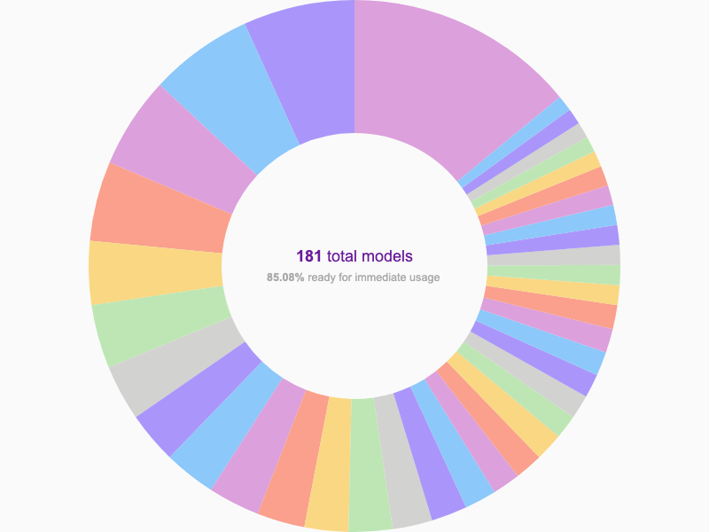
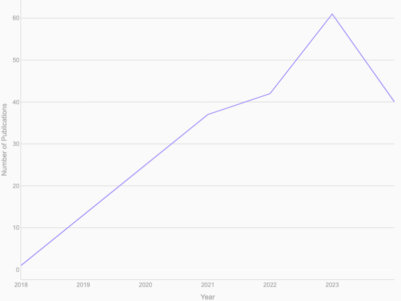

| Title | Tag | Contributor | Incorporation Date | Status | GitHub | Tag_Hover |
|---|---|---|---|---|---|---|
| REINVENT 4 LibInvent | Similarity | ankitskvmdam | 2024-04-18 | Ready | https://github.com/ersilia-os/eos6ost | Similarity |
| ChemGPT-4.7 | Descriptor Chemical language model ... | GemmaTuron | 2023-04-11 | Ready | https://github.com/ersilia-os/eos3cf4 | Descriptor, Chemical language model, Chemical graph model, Embedding |
| Toxicity prediction across the Tox21 panel with semi-supervised learning | Tox21 Toxicity ... | Amna-28 | 2022-06-16 | Ready | https://github.com/ersilia-os/eos69p9 | Tox21, Toxicity, MoleculeNet |
| Inhibition of Hepatits B virus | Antiviral activity IC50 ... | emmakodes | 2023-03-24 | Ready | https://github.com/ersilia-os/eos8lok | Antiviral activity, IC50, HBV, ChEMBL |
| Human Plasma Protein Binding (PPB) of Compounds | Fraction bound ADME | carcablop | 2023-02-03 | Ready | https://github.com/ersilia-os/eos22io | Fraction bound, ADME |
| Human oral bioavailability prediction | ADME Solubility ... | HellenNamulinda | 2023-03-27 | Ready | https://github.com/ersilia-os/eos2lqb | ADME, Solubility, Human |
| Retrosynthetic accessibility score | Synthetic accessibility Chemical synthesis | miquelduranfrigola | 2021-10-19 | Ready | https://github.com/ersilia-os/eos2r5a | Synthetic accessibility, Chemical synthesis |
| SARS-CoV inhibition | COVID19 Antiviral activity ... | miquelduranfrigola | 2021-06-03 | Ready | https://github.com/ersilia-os/eos9f6t | COVID19, Antiviral activity, Sars-CoV-2, Chemical graph model |
| MolBERT chemical language transformer | Chemical language model Embedding ... | miquelduranfrigola | 2021-09-17 | Ready | https://github.com/ersilia-os/eos2thm | Chemical language model, Embedding, Descriptor |
| Small World Enamine REAL search | Similarity | miquelduranfrigola | 2023-11-01 | Ready | https://github.com/ersilia-os/eos9ueu | Similarity |
| ToxCast toxicity panel | Toxicity ToxCast ... | Amna-28 | 2022-07-13 | Ready | https://github.com/ersilia-os/eos481p | Toxicity, ToxCast, Chemical graph model |
| BayeshERG: hERG channel blockade | hERG Toxicity ... | azycn | 2022-08-10 | Ready | https://github.com/ersilia-os/eos4tcc | hERG, Toxicity, Cardiotoxicity |
| Bayesian prediction of synthetic accessibility | Synthetic accessibility Chemical synthesis | miquelduranfrigola | 2021-10-25 | Ready | https://github.com/ersilia-os/eos7pw8 | Synthetic accessibility, Chemical synthesis |
| STOUT: SMILES to IUPAC name translator | Chemical notation Chemical language model | carcablop | 2023-01-13 | To do | https://github.com/ersilia-os/eos5ecc | Chemical notation, Chemical language model |
| Uni-Mol molecular representation | Fingerprint | miquelduranfrigola | 2024-07-22 | Ready | https://github.com/ersilia-os/eos39co | Fingerprint |
| Broad spectrum antibiotic activity | E.coli IC50 ... | miquelduranfrigola | 2018-06-06 | Ready | https://github.com/ersilia-os/eos4e40 | E.coli, IC50, Antimicrobial activity, Chemical graph model |
| Scaffold morphing | Compound generation | Inyrkz | 2024-01-12 | Ready | https://github.com/ersilia-os/eos8bhe | Compound generation |
| CYP450 metabolism | CYP450 ADME ... | GemmaTuron | 2023-04-06 | Ready | https://github.com/ersilia-os/eos44zp | CYP450, ADME, Metabolism |
| DrugTax: Drug taxonomy | Fingerprint Descriptor | Femme-js | 2023-01-03 | Ready | https://github.com/ersilia-os/eos24ci | Fingerprint, Descriptor |
| Identifying HDAC3 inhibitors | Cancer ChEMBL | Richiio | 2023-12-14 | Ready | https://github.com/ersilia-os/eos1n4b | Cancer, ChEMBL |
| Burkholderia cenocepacia inhibition | Antimicrobial activity | Richioo | 2023-12-03 | Ready | https://github.com/ersilia-os/eos5xng | Antimicrobial activity |
| SELF-referencIng Embedded Strings | Chemical notation Chemical language model ... | brosular | 2022-07-14 | Ready | https://github.com/ersilia-os/eos6pbf | Chemical notation, Chemical language model, Compound generation |
| Morgan counts fingerprints | Fingerprint Descriptor | miquelduranfrigola | 2021-08-30 | Ready | https://github.com/ersilia-os/eos5axz | Fingerprint, Descriptor |
| ImageMol HIV growth inhibition | HIV Antiviral activity ... | DhanshreeA | 2023-01-17 | Ready | https://github.com/ersilia-os/eos6hy3 | HIV, Antiviral activity, MoleculeNet |
| Organic reaction outcome prediction | Chemical synthesis | svolk19-stanford | 2022-08-08 | Ready | https://github.com/ersilia-os/eos5qfo | Chemical synthesis |
| Human Liver Microsomal Stability | Metabolism ADME ... | pauline-banye | 2023-03-27 | Ready | https://github.com/ersilia-os/eos31ve | Metabolism, ADME, Human, Microsomal stability, Half-life |
| Test model 5 | Dummy | miquelduranfrigola | 2022-08-19 | Test | nan | Dummy |
| Blood-brain barrier penetration | Permeability MoleculeNet ... | Amna-28 | 2021-06-04 | Ready | https://github.com/ersilia-os/eos1amr | Permeability, MoleculeNet, Chemical graph model, Alzheimer |
| Electronic spectra and excited state energy | MoleculeNet Chemical graph model ... | Amna-28 | 2022-07-13 | Ready | https://github.com/ersilia-os/eos3xip | MoleculeNet, Chemical graph model, Quantum properties |
| ErG 2D Descriptors | Descriptor Fingerprint | GemmaTuron | 2024-03-06 | Ready | https://github.com/ersilia-os/eos5guo | Descriptor, Fingerprint |
| Pharmacokinetics Profiler (PhaKinPro) | Microsomal stability ADME ... | sucksido | 2024-05-03 | Ready | https://github.com/ersilia-os/eos39dp | Microsomal stability, ADME, Metabolism, Half-life, Permeability |
| REINVENT 4 Mol2MolScaffold | Similarity | ankitskvmdam | 2024-03-08 | Ready | https://github.com/ersilia-os/eos57bx | Similarity |
| Broad spectrum antibiotic potential | E.coli IC50 ... | GemmaTuron | 2022-09-28 | Ready | https://github.com/ersilia-os/eos4e41 | E.coli, IC50, Antimicrobial activity, Chemical graph model |
| Chemical space 2D projections against DrugBank | Embedding | miquelduranfrigola | 2024-11-09 | In progress | https://github.com/ersilia-os/eos9gg2 | Embedding |
| Coloring molecules for hERG blockade | hERG Toxicity ... | miquelduranfrigola | 2021-10-19 | Ready | https://github.com/ersilia-os/eos43at | hERG, Toxicity, Cardiotoxicity, Chemical graph model |
| Drug-likeness prediction with Bayesian neural networks | Drug-likeness | Amna-28 | 2022-11-09 | Ready | https://github.com/ersilia-os/eos9sa2 | Drug-likeness |
| Inhibition of Eumycetoma from MycetOS | Mycetoma Antifungal activity | GemmaTuron | 2023-09-27 | Ready | https://github.com/ersilia-os/eos4f95 | Mycetoma, Antifungal activity |
| USR descriptors with pharmacophoric constraints | Descriptor Embedding | GemmaTuron | 2023-11-28 | Ready | https://github.com/ersilia-os/eos1ut3 | Descriptor, Embedding |
| MolBloom: molecule purchasability in ZINC20 | ZINC Compound generation | Amna-28 | 2022-11-02 | Ready | https://github.com/ersilia-os/eos8a5g | ZINC, Compound generation |
| Scaffold decoration | Compound generation | Inyrkz | 2024-02-20 | Ready | https://github.com/ersilia-os/eos2401 | Compound generation |
| Converter of SMILES in Canonical, Selfie, Inchi, Inchi Key form | Chemical notation | carcablop | 2023-01-25 | Ready | https://github.com/ersilia-os/eos7qga | Chemical notation |
| Molecular weight | Molecular weight | miquelduranfrigola | 2021-09-13 | Ready | https://github.com/ersilia-os/eos3b5e | Molecular weight |
| S2DV HepG2 toxicity | ChEMBL IC50 ... | emmakodes | 2023-03-27 | Ready | https://github.com/ersilia-os/eos2fy6 | ChEMBL, IC50, Toxicity |
| Chemical Checker signaturizer | Descriptor Bioactivity profile ... | miquelduranfrigola | 2021-07-01 | Ready | https://github.com/ersilia-os/eos4u6p | Descriptor, Bioactivity profile, Embedding |
| MetaTrans: human drug metabolites | Metabolism | carcablop | 2022-12-20 | Ready | https://github.com/ersilia-os/eos935d | Metabolism |
| WHALES scaled | Natural product Descriptor | miquelduranfrigola | 2024-03-05 | Ready | https://github.com/ersilia-os/eos24ur | Natural product, Descriptor |
| DRKG_COVID19 | None | Inyrkz | 2023-12-05 | Archived | https://github.com/ersilia-os/eos3nl8 | None |
| ADMET properties prediction | ADME Toxicity | DhanshreeA | 2024-02-07 | Ready | https://github.com/ersilia-os/eos7d58 | ADME, Toxicity |
| Physicochemical descriptors available from RDKIT | Descriptor | miquelduranfrigola | 2021-09-17 | Ready | https://github.com/ersilia-os/eos8a4x | Descriptor |
| Chemical Checker Signaturizer 3D | Descriptor Bioactivity profile ... | GemmaTuron | 2024-03-19 | Ready | https://github.com/ersilia-os/eos8aox | Descriptor, Bioactivity profile, Embedding |
| STOUT: SMILES to IUPAC name translator | Chemical notation Chemical language model | carcablop | 2023-01-09 | Ready | https://github.com/ersilia-os/eos4se9 | Chemical notation, Chemical language model |
| Test model 1 | Dummy | miquelduranfrigola | 2021-09-03 | Test | nan | Dummy |
| Coloring molecules for interaction with CYP3A4 | CYP450 ADME ... | miquelduranfrigola | 2021-10-18 | Ready | https://github.com/ersilia-os/eos96ia | CYP450, ADME, Chemical graph model |
| Ligand-based prediction of hERG blockade | hERG Toxicity ... | miquelduranfrigola | 2021-10-18 | Ready | https://github.com/ersilia-os/eos2ta5 | hERG, Toxicity, Cardiotoxicity |
| Test model 2 | Dummy | miquelduranfrigola | 2021-09-03 | Test | nan | Dummy |
| REINVENT 4 LinkInvent | None | ankitskvmdam | 2024-05-19 | In progress | https://github.com/ersilia-os/eos69mr | None |
| Cardiotoxicity Classifier | Cardiotoxicity DrugBank | kurysauce | 2024-06-29 | Ready | https://github.com/ersilia-os/eos1pu1 | Cardiotoxicity, DrugBank |
| Early prediction of Drug-Induced Liver Injury | Toxicity Metabolism | Zainab-ik | 2024-02-19 | Ready | https://github.com/ersilia-os/eos5gge | Toxicity, Metabolism |
| InterDILI: drug-induced injury prediction | Toxicity Human ... | leilayesufu | 2024-01-30 | Ready | https://github.com/ersilia-os/eos21q7 | Toxicity, Human, Metabolism |
| Test for the eos-template | Dummy | miquelduranfrigola | 2022-07-12 | Test | https://github.com/ersilia-os/eost00 | Dummy |
| Parallel Artificial Membrane Permeability Assay (PAMPA) 7 | ADME Permeability ... | pauline-banye | 2023-04-07 | Ready | https://github.com/ersilia-os/eos9tyg | ADME, Permeability, LogP |
| Predicts activity of compounds accross the Tox21 panel | Tox21 Toxicity ... | Amna-28 | 2022-07-12 | Ready | https://github.com/ersilia-os/eos5smc | Tox21, Toxicity, Chemical graph model |
| Natural product likeness score | Natural product Drug-likeness | miquelduranfrigola | 2021-10-19 | Ready | https://github.com/ersilia-os/eos9yui | Natural product, Drug-likeness |
| BBBP model tested on marine-derived kinase inhibitors | Drug-likeness Permeability | miquelduranfrigola | 2024-10-23 | Ready | https://github.com/ersilia-os/eos3mk2 | Drug-likeness, Permeability |
| DeepSMILES, an alternate SMILES representation for deep learning | Chemical language model Chemical notation | brosular | 2022-07-28 | Ready | https://github.com/ersilia-os/eos2mrz | Chemical language model, Chemical notation |
| Neural network-based logP prediction for druglike small molecules | Lipophilicity LogP | leilayesufu | 2023-12-12 | Ready | https://github.com/ersilia-os/eos9ym3 | Lipophilicity, LogP |
| Small molecule price prediction | Price Compound generation ... | anamika-yadav99 | 2022-03-28 | Ready | https://github.com/ersilia-os/eos7a45 | Price, Compound generation, Chemical synthesis |
| CYP2C9 metabolism | CYP450 ADME ... | ZakiaYahya | 2023-07-05 | Ready | https://github.com/ersilia-os/eos5jz9 | CYP450, ADME, Metabolism |
| ADMETlab-2 | Toxicity ADME ... | miquelduranfrigola | 2022-09-16 | Ready | https://github.com/ersilia-os/eos2v11 | Toxicity, ADME, Lipophilicity, Solubility, Permeability |
| Toxicity and synthetic accessibility prediction | Toxicity Synthetic accessibility | miquelduranfrigola | 2021-06-04 | Ready | https://github.com/ersilia-os/eos92sw | Toxicity, Synthetic accessibility |
| SARS-CoV-2 antiviral prediction: REDIAL-2020 | Sars-CoV-2 COVID19 ... | Pradnya2203 | 2023-03-27 | Ready | https://github.com/ersilia-os/eos8fth | Sars-CoV-2, COVID19, Antiviral activity |
| MAIP: antimalarial activity prediction | P.falciparum Malaria ... | Amna-28 | 2022-08-18 | Ready | https://github.com/ersilia-os/eos4zfy | P.falciparum, Malaria, Antimicrobial activity |
| Aqueous solubility prediction | Solubility ADME ... | miquelduranfrigola | 2021-10-19 | Ready | https://github.com/ersilia-os/eos6oli | Solubility, ADME, LogS |
| SMILES transformer descriptor | Chemical language model Descriptor ... | miquelduranfrigola | 2021-09-22 | Ready | https://github.com/ersilia-os/eos2lm8 | Chemical language model, Descriptor, Embedding |
| Octanol/water distribution coefficient | MoleculeNet Lipophilicity ... | Amna-28 | 2022-07-13 | Ready | https://github.com/ersilia-os/eos85a3 | MoleculeNet, Lipophilicity, ADME, LogD, Chemical graph model |
| Coloring molecules for plasma protein binding prediction | ADME Fraction bound ... | miquelduranfrigola | 2021-10-19 | Ready | https://github.com/ersilia-os/eos6ao8 | ADME, Fraction bound, Chemical graph model |
| MAIP distillation: antimalarial potential prediction | P.falciparum Malaria ... | miquelduranfrigola | 2021-11-02 | Ready | https://github.com/ersilia-os/eos2gth | P.falciparum, Malaria, Antimicrobial activity |
| Unit test model for compounds | Fingerprint | miquelduranfrigola | 2024-07-03 | Test | https://github.com/ersilia-os/eos5iy5 | Fingerprint |
| Morgan Fingerprints | Descriptor Fingerprint | GemmaTuron | 2023-12-01 | Ready | https://github.com/ersilia-os/eos4wt0 | Descriptor, Fingerprint |
| Similarity search in ChEMBL, DrugBank and UNPD | Similarity ChEMBL ... | Amna-28 | 2022-08-18 | Ready | https://github.com/ersilia-os/eos9c7k | Similarity, ChEMBL, DrugBank |
| Membrane permeability in Mycobacterium tuberculosis | Permeability M.tuberculosis ... | miquelduranfrigola | 2021-10-14 | Ready | https://github.com/ersilia-os/eos8d8a | Permeability, M.tuberculosis, ADME, Tuberculosis |
| HepG2 Toxicity - MMV | Toxicity Human | GemmaTuron | 2023-08-24 | Ready | https://github.com/ersilia-os/eos3le9 | Toxicity, Human |
| CYP2D6 metabolism | CYP450 ADME ... | ZakiaYahya | 2023-07-06 | Ready | https://github.com/ersilia-os/eos7nno | CYP450, ADME, Metabolism |
| GDBChEMBL similarity search | Similarity ChEMBL | Amna-28 | 2022-08-15 | Ready | https://github.com/ersilia-os/eos4b8j | Similarity, ChEMBL |
| PADEL small molecule descriptors | Descriptor | miquelduranfrigola | 2021-09-27 | Ready | https://github.com/ersilia-os/eos7asg | Descriptor |
| Classification of hERG blockers and nonblockers | Toxicity hERG ... | azycn | 2022-07-22 | Ready | https://github.com/ersilia-os/eos30gr | Toxicity, hERG, Cardiotoxicity |
| 3D pharmacophore descriptor | Descriptor Fingerprint | GemmaTuron | 2023-11-28 | Ready | https://github.com/ersilia-os/eos4x30 | Descriptor, Fingerprint |
| RXNFP - chemical reaction fingerprints | Fingerprint Embedding ... | samuelmaina | 2023-03-28 | Ready | https://github.com/ersilia-os/eos6aun | Fingerprint, Embedding, Chemical synthesis |
| Predict micro-pKa of organic molecules | pKa | LauraGomezjurado | 2024-07-17 | Ready | https://github.com/ersilia-os/eos3wzy | pKa |
| ADMETlab models for evaluation of drug candidates | ADME Toxicity ... | svolk19-stanford | 2022-07-28 | Ready | https://github.com/ersilia-os/eos2re5 | ADME, Toxicity, Lipophilicity, Solubility, Permeability |
| PubChem Molecular Sampler | Similarity | GemmaTuron | 2023-08-10 | Ready | https://github.com/ersilia-os/eos2hzy | Similarity |
| Anti-schistosomiasis activity | Neglected tropical disease Schistosomiasis ... | GemmaTuron | 2023-08-24 | Ready | https://github.com/ersilia-os/eos2l0q | Neglected tropical disease, Schistosomiasis, IC50 |
| Molecular Prediction Model Fine-Tuning (MolPMoFiT) | Descriptor Embedding | GemmaTuron | 2023-11-06 | Ready | https://github.com/ersilia-os/eos9zw0 | Descriptor, Embedding |
| Parallel Artificial Membrane Permeability Assay 5 | ADME Permeability ... | pauline-banye | 2023-01-29 | Ready | https://github.com/ersilia-os/eos81ew | ADME, Permeability, LogP |
| Drug-induced liver injury prediction | Metabolism Toxicity | leilayesufu | 2024-01-02 | Archived | https://github.com/ersilia-os/eos7e3s | Metabolism, Toxicity |
| Molecular representation learning | Embedding | DhanshreeA | 2023-01-25 | Ready | https://github.com/ersilia-os/eos4avb | Embedding |
| Path-based fingerprint | Fingerprint Descriptor | miquelduranfrigola | 2021-09-17 | Ready | https://github.com/ersilia-os/eos7jio | Fingerprint, Descriptor |
| Membrane permeability of fluorescent probes | Permeability ADME ... | miquelduranfrigola | 2021-11-10 | Ready | https://github.com/ersilia-os/eos65rt | Permeability, ADME, LogP |
| Pharmacophore-guided molecular generation | Chemical graph model Compound generation | miquelduranfrigola | 2023-12-01 | Ready | https://github.com/ersilia-os/eos69e6 | Chemical graph model, Compound generation |
| GDBMedChem similarity search | Similarity ChEMBL | Amna-28 | 2022-08-18 | Ready | https://github.com/ersilia-os/eos7jlv | Similarity, ChEMBL |
| Prediction of hERG Channel Blockers with Directed Message Passing Neural Networks | Cardiotoxicity hERG ... | leilayesufu | 2023-12-04 | Ready | https://github.com/ersilia-os/eos30f3 | Cardiotoxicity, hERG, Toxicity, Descriptor |
| Antimalarial activity (ABS and sexual stages) | Malaria P.falciparum | GemmaTuron | 2023-07-10 | Ready | https://github.com/ersilia-os/eos80ch | Malaria, P.falciparum |
| Basic molecular descriptors from Datamol | Descriptor | miquelduranfrigola | 2024-11-09 | In progress | https://github.com/ersilia-os/eos4djh | Descriptor |
| Passive permeability based on simulations | Permeability ADME ... | miquelduranfrigola | 2021-11-10 | Ready | https://github.com/ersilia-os/eos2hbd | Permeability, ADME, Papp |
| Molecular fingerprint maps based on broadly learned knowledge-based representations | Fingerprint | samuelmaina | 2023-07-03 | Ready | https://github.com/ersilia-os/eos59rr | Fingerprint |
| CYP3A4 metabolism | CYP450 ADME ... | ZakiaYahya | 2023-07-06 | Ready | https://github.com/ersilia-os/eos3ev6 | CYP450, ADME, Metabolism |
| MeSH therapeutic use based on chemical structure | Therapeutic indication | Amna-28 | 2022-10-17 | Ready | https://github.com/ersilia-os/eos238c | Therapeutic indication |
| MolT5-Translation between Molecules and Natural Language | Chemical language model Chemical notation | Amna-28 | 2022-11-14 | Ready | https://github.com/ersilia-os/eos2rd8 | Chemical language model, Chemical notation |
| Drug-likeness scoring based on unsupervised learning | Drug-likeness | miquelduranfrigola | 2024-09-04 | Ready | https://github.com/ersilia-os/eos9p4a | Drug-likeness |
| H3D virtual screening cascade light | Malaria P.falciparum ... | miquelduranfrigola | 2023-05-09 | Ready | https://github.com/ersilia-os/eos7kpb | Malaria, P.falciparum, Tuberculosis, M.tuberculosis, ADME, Cytotoxicity, Solubility |
| Similarity search in ChEMBL | ChEMBL Similarity | Amna-28 | 2022-08-18 | Ready | https://github.com/ersilia-os/eos2a9n | ChEMBL, Similarity |
| imagemol-gpcr | Target identification GPCR | DhanshreeA | 2023-01-25 | Ready | https://github.com/ersilia-os/eos93h2 | Target identification, GPCR |
| Antituberculosis activity prediction | M.tuberculosis Antimicrobial activity ... | GemmaTuron | 2023-11-24 | Ready | https://github.com/ersilia-os/eos9ivc | M.tuberculosis, Antimicrobial activity, MIC90, Tuberculosis |
| DelFTa quantum mechanical properties prediction | None | miquelduranfrigola | 2024-04-24 | In progress | https://github.com/ersilia-os/eos9aqt | None |
| Synthetic accessibility score | Synthetic accessibility Chemical synthesis | miquelduranfrigola | 2022-07-10 | Ready | https://github.com/ersilia-os/eos9ei3 | Synthetic accessibility, Chemical synthesis |
| Multi-target prediction based on ChEMBL data | Bioactivity profile Target identification ... | miquelduranfrigola | 2021-06-04 | Ready | https://github.com/ersilia-os/eos1vms | Bioactivity profile, Target identification, ChEMBL |
| Natural product score | Natural product Drug-likeness | miquelduranfrigola | 2021-10-19 | Ready | https://github.com/ersilia-os/eos8ioa | Natural product, Drug-likeness |
| ImageMol human beta-secretase-1 (BACE-1) inhibition | BACE Chemical graph model ... | DhanshreeA | 2023-01-17 | Ready | https://github.com/ersilia-os/eos8c0o | BACE, Chemical graph model, MoleculeNet |
| Antimalarial activity (MMV) | Malaria P.falciparum ... | GemmaTuron | 2023-08-24 | Ready | https://github.com/ersilia-os/eos4rta | Malaria, P.falciparum, IC50 |
| Atomization energy of small molecules | MoleculeNet Chemical graph model ... | Amna-28 | 2022-07-13 | Ready | https://github.com/ersilia-os/eos6o0z | MoleculeNet, Chemical graph model, Quantum properties |
| Substructure-based search of novel antibiotics | Cytotoxicity Antimicrobial activity ... | Richiio | 2024-01-26 | Ready | https://github.com/ersilia-os/eos18ie | Cytotoxicity, Antimicrobial activity, ESKAPE |
| Chemical space 2D projections against ChemDiv | Embedding | miquelduranfrigola | 2024-11-09 | In progress | https://github.com/ersilia-os/eos2db3 | Embedding |
| Coloring molecules for Caco-2 cell permeability | Permeability ADME ... | miquelduranfrigola | 2021-10-19 | Ready | https://github.com/ersilia-os/eos1af5 | Permeability, ADME, Papp, Chemical graph model |
| Variational autoencoder for small molecule generation | Compound generation | brosular | 2022-08-13 | Ready | https://github.com/ersilia-os/eos3ae7 | Compound generation |
| Text Embeddings Extraction using Pretrained Lamguage Models | Chemical language model Embedding | Femme-js | 2023-01-25 | To do | https://github.com/ersilia-os/eos1086 | Chemical language model, Embedding |
| Adverse Drug Reactions | Toxicity MoleculeNet ... | Amna-28 | 2021-06-04 | Ready | https://github.com/ersilia-os/eos77w8 | Toxicity, MoleculeNet, Side effects |
| Molecular maps based on broadly learned knowledge-based representations | Descriptor | miquelduranfrigola | 2022-08-25 | Ready | https://github.com/ersilia-os/eos6m4j | Descriptor |
| ChEMBL Molecular Sampler | Similarity | GemmaTuron | 2023-09-04 | Ready | https://github.com/ersilia-os/eos1noy | Similarity |
| Mordred chemical descriptors | Descriptor | miquelduranfrigola | 2021-09-17 | Ready | https://github.com/ersilia-os/eos78ao | Descriptor |
| Estate Molecular Descriptors | Fingerprint Descriptor | GemmaTuron | 2023-04-11 | Ready | https://github.com/ersilia-os/eos3zur | Fingerprint, Descriptor |
| Toxicity at clinical trial stage | Toxicity MoleculeNet ... | Amna-28 | 2022-07-13 | Ready | https://github.com/ersilia-os/eos6fza | Toxicity, MoleculeNet, Chemical graph model, Side effects |
| WHALES similarity search on 600k molecules from Q-Mug | Similarity | miquelduranfrigola | 2024-04-22 | Ready | https://github.com/ersilia-os/eos6ru3 | Similarity |
| SmilesPE: tokenizer algorithm for SMILES, DeepSMILES, and SELFIES | Chemical language model Chemical notation ... | Richiio | 2023-08-02 | Ready | https://github.com/ersilia-os/eos1mxi | Chemical language model, Chemical notation, ChEMBL |
| CHEESE similarity search with multiple similarity measures and against various databases | Similarity | miquelduranfrigola | 2024-08-19 | In progress | https://github.com/ersilia-os/eos9uqy | Similarity |
| Aqueous Kinetic Solubility | ADME Solubility | pauline-banye | 2023-01-31 | Ready | https://github.com/ersilia-os/eos74bo | ADME, Solubility |
| Small World Zinc search | Similarity | miquelduranfrigola | 2023-11-02 | Ready | https://github.com/ersilia-os/eos1d7r | Similarity |
| CReM fragment based structure generation | Compound generation | DhanshreeA | 2022-12-20 | Ready | https://github.com/ersilia-os/eos4q1a | Compound generation |
| Ersilia Compound Embeddings | Descriptor Embedding | GemmaTuron | 2023-04-13 | Ready | https://github.com/ersilia-os/eos2gw4 | Descriptor, Embedding |
| Antimalarial activity from OSM | Malaria P.falciparum ... | GemmaTuron | 2023-08-02 | Ready | https://github.com/ersilia-os/eos7yti | Malaria, P.falciparum, IC50 |
| Knowledge-guided pre-trained graph transformer | None | miquelduranfrigola | 2024-12-17 | In progress | https://github.com/ersilia-os/eos8aa5 | None |
| Inhibition of HDAC1 | HIV Human ... | GemmaTuron | 2023-09-27 | Ready | https://github.com/ersilia-os/eos2zmb | HIV, Human, HDAC1 |
| QcrB Inhibition (M. tuberculosis) | M.tuberculosis Antimicrobial activity | GemmaTuron | 2023-04-06 | Ready | https://github.com/ersilia-os/eos24jm | M.tuberculosis, Antimicrobial activity |
| Rat liver microsomal stability | Microsomal stability Rat ... | pauline-banye | 2023-01-12 | Ready | https://github.com/ersilia-os/eos5505 | Microsomal stability, Rat, ADME, Metabolism, Half-life |
| REINVENT 4 Mol2MolMediumSimilarity | Similarity | ankitskvmdam | 2024-02-07 | Ready | https://github.com/ersilia-os/eos694w | Similarity |
| Inhibition of A.Baumannii growth | A.baumannii Antimicrobial activity | miquelduranfrigola | 2023-08-23 | Ready | https://github.com/ersilia-os/eos3804 | A.baumannii, Antimicrobial activity |
| Human cytotoxicity endpoints | Cytotoxicity ESKAPE | Richiio | 2024-02-05 | Ready | https://github.com/ersilia-os/eos42ez | Cytotoxicity, ESKAPE |
| Water solubility | Solubility MoleculeNet ... | Amna-28 | 2022-07-13 | Ready | https://github.com/ersilia-os/eos8451 | Solubility, MoleculeNet, ADME, LogS, Chemical graph model |
| Test model 3 | Dummy | miquelduranfrigola | 2021-09-03 | Test | nan | Dummy |
| Extending molecular scaffolds with building blocks | Chemical graph model Compound generation | miquelduranfrigola | 2023-11-03 | Ready | https://github.com/ersilia-os/eos633t | Chemical graph model, Compound generation |
| Carcinogenic potential of metabolites and small molecules | Toxicity Cancer ... | brosular | 2022-08-30 | Ready | https://github.com/ersilia-os/eos1579 | Toxicity, Cancer, Metabolism |
| Avalon fingerprint | Fingerprint | miquelduranfrigola | 2021-09-14 | Ready | https://github.com/ersilia-os/eos8h6g | Fingerprint |
| Predict bioactivity against Main Protease of SARS-CoV-2 | COVID19 | HarmonySosa | 2024-07-01 | Ready | https://github.com/ersilia-os/eos3nn9 | COVID19 |
| Continuous and data-driven descriptors | Descriptor Chemical language model | miquelduranfrigola | 2021-07-01 | Ready | https://github.com/ersilia-os/eos7a04 | Descriptor, Chemical language model |
| SQUID 3D shape generation | Compound generation | miquelduranfrigola | 2024-05-01 | In progress | https://github.com/ersilia-os/eos8vud | Compound generation |
| Natural product fingerprint | Natural product Fingerprint ... | miquelduranfrigola | 2021-11-03 | Ready | https://github.com/ersilia-os/eos6tg8 | Natural product, Fingerprint, Descriptor |
| Small World Wuxi search | Similarity | miquelduranfrigola | 2023-11-02 | Ready | https://github.com/ersilia-os/eos3kcw | Similarity |
| Antimicrobial class specificity prediction | None | miquelduranfrigola | 2024-12-17 | In progress | https://github.com/ersilia-os/eos74km | None |
| Holistic molecular descriptors for scaffold hopping | Natural product Descriptor | miquelduranfrigola | 2021-07-15 | Ready | https://github.com/ersilia-os/eos3ae6 | Natural product, Descriptor |
| Growth Inhibitors of Neisseria gonorrhoeae | Antimicrobial activity ChEMBL ... | Richiio | 2024-01-03 | Ready | https://github.com/ersilia-os/eos5cl7 | Antimicrobial activity, ChEMBL, N.gonorrhoeae |
| BACE-1 inhibition | Alzheimer BACE ... | Amna-28 | 2022-07-13 | Ready | https://github.com/ersilia-os/eos2mhp | Alzheimer, BACE, MoleculeNet, Chemical graph model |
| Mycobacterium tuberculosis inhibitor prediction | M.tuberculosis IC50 ... | Amna-28 | 2022-06-28 | Ready | https://github.com/ersilia-os/eos46ev | M.tuberculosis, IC50, Tuberculosis, Antimicrobial activity |
| Extending molecular scaffolds with fragments | Chemical graph model Compound generation | anamika-yadav99 | 2022-11-16 | Ready | https://github.com/ersilia-os/eos9taz | Chemical graph model, Compound generation |
| Retrosynthesis planning | Synthetic accessibility Chemical synthesis | svolk19-stanford | 2022-07-19 | Ready | https://github.com/ersilia-os/eos526j | Synthetic accessibility, Chemical synthesis |
| One-molecule MolLib | Similarity | miquelduranfrigola | 2024-07-23 | In progress | https://github.com/ersilia-os/eos4f8y | Similarity |
| Projections against Coconut | Embedding | miquelduranfrigola | 2024-11-10 | In progress | https://github.com/ersilia-os/eos8ub5 | Embedding |
| Human Liver Cytosolic Stability | ADME Metabolism ... | pauline-banye | 2023-03-01 | Ready | https://github.com/ersilia-os/eos9yy1 | ADME, Metabolism, Human, Half-life |
| FCD: Fréchet ChemNet Distance to evaluate generative models | Similarity Bioactivity profile ... | brosular | 2022-08-12 | Ready | https://github.com/ersilia-os/eos9be7 | Similarity, Bioactivity profile, Compound generation |
| Stoned Sampler | Compound generation | GemmaTuron | 2023-08-08 | Ready | https://github.com/ersilia-os/eos8fma | Compound generation |
| PAMPA effective permeability | Permeability ADME ... | miquelduranfrigola | 2021-11-10 | Ready | https://github.com/ersilia-os/eos97yu | Permeability, ADME, LogP |
| Large-scale graph transformer | Chemical graph model Embedding ... | miquelduranfrigola | 2021-07-02 | Ready | https://github.com/ersilia-os/eos7w6n | Chemical graph model, Embedding, Descriptor |
| ADMET Properties Optimization | None | Zainab-ik | 2024-02-13 | To do | https://github.com/ersilia-os/eos2fg2 | None |
| Hydration free energy of small molecules in water | MoleculeNet Chemical graph model ... | Amna-28 | 2022-07-13 | Ready | https://github.com/ersilia-os/eos157v | MoleculeNet, Chemical graph model, Quantum properties |
| FasmiFra molecule generator | Compound generation | miquelduranfrigola | 2023-08-01 | Ready | https://github.com/ersilia-os/eos4qda | Compound generation |
| MolE molecular embeddings | None | miquelduranfrigola | 2024-11-18 | In progress | https://github.com/ersilia-os/eos3dq3 | None |
| Drug metabolites prediction | None | miquelduranfrigola | 2024-10-24 | In progress | https://github.com/ersilia-os/eos35g4 | None |
| Microstate pKa values | pKa ADME | svolk19-stanford | 2022-07-13 | Ready | https://github.com/ersilia-os/eos2b6f | pKa, ADME |
| SARS-CoV-2 Anti viral screening | Sars-CoV-2 Antiviral activity ... | DhanshreeA | 2023-01-25 | Ready | https://github.com/ersilia-os/eos4cxk | Sars-CoV-2, Antiviral activity, COVID19 |
| Mtb Permeability | M.tuberculosis Permeability | miquelduranfrigola | 2024-10-16 | In progress | https://github.com/ersilia-os/eos3ujl | M.tuberculosis, Permeability |
| BioGPT embeddings | Embedding Biomedical text | miquelduranfrigola | 2023-08-30 | Ready | https://github.com/ersilia-os/eos1xje | Embedding, Biomedical text |
| Test model 4 | Dummy | miquelduranfrigola | 2022-07-21 | Test | nan | Dummy |
| Unit Testing Compounds Ersilia Pack | None | DhanshreeA | 2024-07-15 | In progress | https://github.com/ersilia-os/eos30d7 | None |
Models' Impact
Disease Impact In The Global South
In the Global South, there have been 6,921,521,278 cases of severe diseases, and 94,096,175 deaths as a result.
NOTE: measles/polio deaths were unable to be accessed programmatically, and as such display as 0.
Ersilia's Models
To address the challenges above, Ersilia has developed 181 models each designed with diverse applications in mind.
Model Distribution
Models per Year
Model List